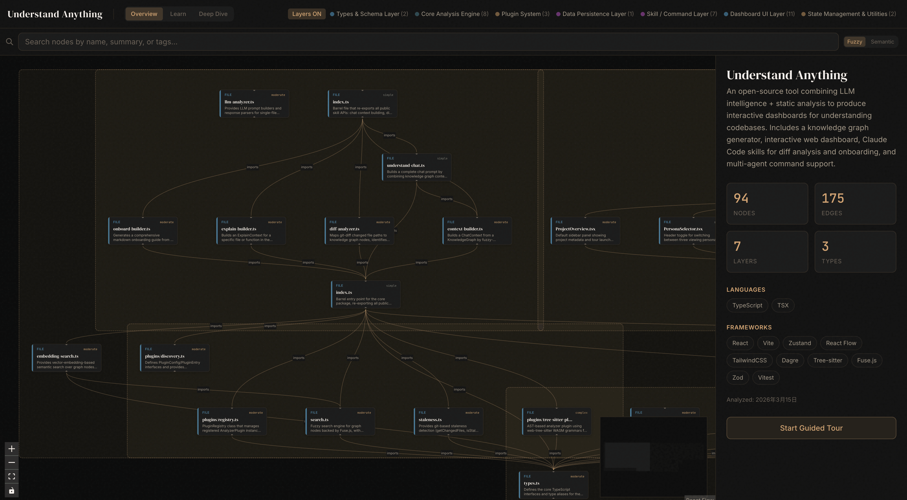

Mapa da trilha
Conteúdo detalhado
🏗️ Arquitetura do monorepo: core + dashboard + plugin
Como pnpm workspaces, subpath exports browser-safe e três pastas de plugin convivem num único repo.
Estrutura definida em pnpm-workspace.yaml que agrupa understand-anything-plugin/packages/* e o próprio plugin como um único grafo de dependências.
Mudou tipo no core? Dashboard e plugin enxergam na hora, sem republicar. Tests rodam com filtros (--filter) por pacote.
workspace protocol, hoisting, filters, packageManager pinado.
@understand-anything/core reúne types, schema, persistência, tree-sitter (WASM), search, tours e plugins. Usado pelo skill E pelo dashboard.
É o "contrato": grafo, tipos, validação. Toda nova feature começa modelando aqui.
Pure TS, sem dependência de Node-only no caminho do dashboard, single source of truth para schema.
Truque de "exports" no package.json que expõe só fatias seguras pro browser. Importar o entry default puxaria fs, path, etc.
Erro mais comum no dashboard: import errado quebra o build do Vite. Saber qual subpath usar evita debug doloroso.
Conditional exports, dual entry points, dependency boundary.
App web React Flow + Zustand que renderiza o grafo. Tema dark luxury, fontes DM Serif Display.
É onde o usuário gasta 95% do tempo. UX e perf vivem aqui.
Graph-first layout (75% grafo + sidebar 360px), persona-adaptive UI, schema validation no load.
Pasta do plugin que junta TS dos slash-commands (src/), definições de skills, agents e hooks.
Adicionar comando novo (ex: /understand-foo) significa tocar 3 pastas — skill, agent e src.
Skill definition, agent frontmatter, hooks de auto-update.
.claude-plugin/, .cursor-plugin/ e .copilot-plugin/ — cada um com seu plugin.json versionado em sincronia.
Mesma feature, três runtimes. Versionamento desalinhado = marketplace quebrado.
Auto-discovery, marketplace.json (sem version!), 5 arquivos de versão sincronizados.
🤖 O pipeline de agentes e o knowledge graph
Cinco agentes em série, dezenas em paralelo. Como JSON intermediário vira um grafo validado por schema.
Agente que enumera arquivos, detecta linguagens/frameworks e pré-resolve o importMap com tree-sitter.
Sem ele, file-analyzers re-derivam imports do zero — caro e inconsistente.
Glob ignore rules, language detection, importMap pré-resolvido.
Worker que lê 20-30 arquivos por batch, até 5 em paralelo. Produz nós (function, class, file) e arestas (imports, calls).
Gargalo de custo/latência. Tuning de batch size = diferença entre 3 e 30 minutos.
Concorrência, deduplicação por fingerprint, output JSON normalizado.
Lê todos os nós e atribui uma layer (API, Service, Data, UI, Utility) usando heurísticas + LLM.
A coloração do grafo no dashboard vem daqui. Camadas erradas confundem o usuário.
Layer taxonomy, confidence score, fallback rules.
Gera sequências ordenadas por dependência: "comece aqui, depois aqui". Persistidas como tours[].
Diferencial vs ferramentas de grafo "burras". Ensina o codebase, não só mostra.
Topological order, narrative voice, stop annotations.
Checa integridade referencial: aresta apontando para nó inexistente? Tour com stop quebrado? Falha cedo.
Sem ele, o dashboard quebra silenciosamente. Schema validation no load é a segunda linha de defesa.
Inline check (default) vs full LLM review (--review), referential integrity.
Diretório no projeto-alvo: intermediate/ (scratch dos agentes), knowledge-graph.json (output canônico), diff-overlay.json.
Saber o que commitar e o que ignorar é diferença entre time produtivo e PR com 40 MB de JSON.
Intermediate cleanup pós-merge, .gitignore curado, git-lfs em grafos >10 MB.
🎨 O dashboard: React Flow, Zustand, sidebar e code viewer
Como o frontend serve arquivos com gating, navega o grafo e abre um viewer slide-up que vira modal full-screen.
React Flow desenha o grafo (pan, zoom, edges); Zustand guarda o estado global (selected node, persona, viewer aberto).
Zustand sem Redux = simples. Mas custom node types precisam de cuidado com re-render.
Slices, selectors, memoization de nós, layout algorithm pluggable.
Endpoint do dev server que serve conteúdo de arquivos, gated por access token + allowlist derivada do grafo.
Path traversal seria trivial sem isso. Allowlist evita servir .env por engano.
Defense in depth, derivar permissões do grafo, token rotativo por sessão.
Sidebar de 360px com duas abas. Info: ProjectOverview → NodeInfo (quando seleciona) → LearnPanel (persona Learn). Files: FileExplorer derivado do grafo.
Estado composicional. Trocar de aba não pode perder seleção.
Persona-adaptive views, derive tree from graph, composable panels.
Painel que sobe pela base ao clicar num file node. Botão expande pra modal full-screen. Syntax highlight via prism-react-renderer.
Monaco foi removido. Por quê? Bundle gigante e Monaco trazia features que ninguém usava no contexto "ver, não editar".
Read-only viewer, slide transition, modal escalation, fetch gated.
Paleta #0a0a0a + acentos gold/amber #d4a574, tipografia DM Serif Display para títulos.
Identidade visual coerente diferencia ferramenta de hobby vs produto. Tailwind v4 tokens centralizam isso.
Design tokens, restrição cromática, serif para autoridade, sans para utilidade.
Ao carregar knowledge-graph.json, valida contra o schema do core. Falha = banner vermelho explicando o quê.
Grafo gerado em versão antiga + dashboard novo é receita de "tela em branco". Banner economiza horas de debug.
Zod/Valibot, error boundary, mensagem acionável.